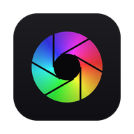
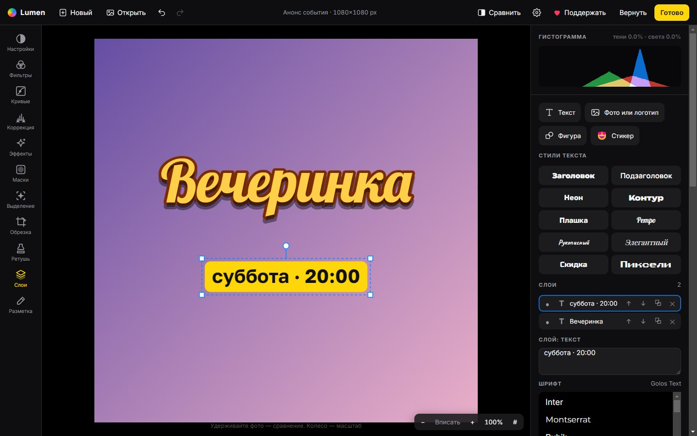

<meta charset="utf-8">
<meta name="viewport" content="width=device-width, initial-scale=1, viewport-fit=cover">
<title>Lumen</title>
<meta name="claude:viewport-fit-sides" content="cover">
<meta name="description" content="Lumen — программа-фоторедактор для Windows и macOS: фильтры и настройки как на iPhone, уровни, кривые, штамп и восстанавливающая кисть как в Photoshop.">
<meta name="theme-color" content="#0b0b0d">
<link rel="icon" type="image/png" href="img/favicon.png">
<link rel="apple-touch-icon" href="img/apple-touch-icon.png">
<link rel="preconnect" href="https://fonts.googleapis.com">
<link rel="preconnect" href="https://fonts.gstatic.com" crossorigin>
<link rel="stylesheet" href="https://fonts.googleapis.com/css2?family=Unbounded:wght@500;700&family=Golos+Text:wght@400;500;600&family=JetBrains+Mono:wght@400;500&display=swap">
<style>
/* Layout: one dark darkroom-style page. Hero with the real app, then a spectrum strip of filters, features, downloads. Dark only, like the app itself. */
:root{
  --bg:#0b0b0d;
  --panel:#141417;
  --panel2:#1c1c20;
  --line:#26262b;
  --fg:#f3f2ef;
  --fg2:#a3a2a8;
  --fg3:#6c6b72;
  --sun:#ffd60a;
  --sun-ink:#1d1800;
  --spectrum:conic-gradient(from 200deg,#ff453a,#ff9f0a,#ffd60a,#30d158,#64d2ff,#0a84ff,#bf5af2,#ff375f,#ff453a);
  --display:"Unbounded","Golos Text",system-ui,sans-serif;
  --body:"Golos Text",-apple-system,"Segoe UI",system-ui,sans-serif;
  --mono:"JetBrains Mono",ui-monospace,Menlo,Consolas,monospace;
  color-scheme:dark;
}
*{box-sizing:border-box}
html{scroll-behavior:smooth}
body{margin:0;background:var(--bg);color:var(--fg);font-family:var(--body);font-size:16px;line-height:1.55;-webkit-font-smoothing:antialiased}
a{color:inherit}
img{max-width:100%;height:auto;display:block}
:focus-visible{outline:2px solid var(--sun);outline-offset:3px;border-radius:6px}
.wrap{max-width:1180px;margin:0 auto;padding-left:max(20px,env(safe-area-inset-left,0px));padding-right:max(20px,env(safe-area-inset-right,0px))}

/* nav */
body::before{content:"";position:fixed;inset:0 0 auto;height:env(safe-area-inset-top,0px);z-index:10;background:rgba(11,11,13,.82)}
.nav{position:sticky;top:env(safe-area-inset-top,0px);z-index:9;background:rgba(11,11,13,.82);backdrop-filter:blur(14px);-webkit-backdrop-filter:blur(14px);border-bottom:1px solid var(--line)}
.nav .wrap{display:flex;align-items:center;gap:24px;height:60px}
.logo{display:flex;align-items:center;gap:10px;font-family:var(--display);font-weight:700;font-size:17px;letter-spacing:.01em;text-decoration:none}
.logo img{width:30px;height:30px}
.nav nav{display:flex;gap:22px;margin-left:auto;font-size:14.5px;color:var(--fg2)}
.nav nav a{text-decoration:none}
.nav nav a:hover{color:var(--fg)}

.langs{display:flex;gap:2px;background:var(--panel2);border-radius:9px;padding:2px;margin-left:12px;flex:none}
.langs button{background:transparent;border:0;color:var(--fg2);font:600 12px var(--mono);letter-spacing:.04em;height:28px;padding:0 9px;border-radius:7px;cursor:pointer}
.langs button:hover{color:var(--fg)}
.langs button[aria-pressed="true"]{background:var(--fg);color:var(--bg)}
@media (max-width:640px){.langs{margin-left:auto}}

/* buttons */
.btn{display:inline-flex;align-items:center;gap:10px;height:52px;padding:0 22px;border-radius:14px;font:600 15.5px var(--body);text-decoration:none;cursor:pointer;border:1px solid transparent;white-space:nowrap;transition:transform .15s,background .15s}
.btn svg{width:20px;height:20px;flex:none}
.btn:hover{transform:translateY(-1px)}
.btn.primary{background:var(--sun);color:var(--sun-ink)}
.btn.primary:hover{background:#ffe24a}
.btn.ghost{background:var(--panel2);color:var(--fg);border-color:var(--line)}
.btn.ghost:hover{background:#25252a}
.btn small{font-weight:500;opacity:.7;font-size:13px}

/* hero */
.hero{padding-block:72px 40px;position:relative;overflow:hidden}
.hero::before{content:"";position:absolute;width:880px;height:880px;right:-260px;top:-340px;border-radius:50%;background:var(--spectrum);filter:blur(120px);opacity:.16;pointer-events:none}
.hero .wrap{position:relative}
.eyebrow{font-family:var(--mono);font-size:12.5px;letter-spacing:.08em;text-transform:uppercase;color:var(--fg2);display:flex;gap:10px;align-items:center}
.eyebrow i{width:8px;height:8px;border-radius:50%;background:var(--spectrum)}
h1{font-family:var(--display);font-weight:700;font-size:clamp(34px,6.2vw,72px);line-height:1.02;letter-spacing:-.025em;margin:18px 0 22px;text-wrap:balance;max-width:15ch}
h1 .lit{background:linear-gradient(92deg,#ff9f0a,#ffd60a 35%,#ff375f 70%,#bf5af2);-webkit-background-clip:text;background-clip:text;color:transparent}
.lead{font-size:clamp(17px,1.8vw,20px);color:var(--fg2);max-width:56ch;margin:0 0 32px}
.ctas{display:flex;flex-wrap:wrap;gap:12px;align-items:center}
.meta{margin-top:16px;font-size:13.5px;color:var(--fg3);font-family:var(--mono)}

.shots{margin-top:56px;position:relative}
.desk{border-radius:14px;border:1px solid var(--line);box-shadow:0 40px 120px rgba(0,0,0,.6),0 0 0 6px rgba(255,255,255,.02);overflow:hidden;background:#000}
.bar{height:30px;background:#18181b;display:flex;align-items:center;gap:7px;padding-left:12px;border-bottom:1px solid var(--line)}
.bar i{width:11px;height:11px;border-radius:50%;background:#3a3a40}
.bar i:nth-child(1){background:#ff5f57}.bar i:nth-child(2){background:#febc2e}.bar i:nth-child(3){background:#28c840}
.bar span{margin:0 auto;padding-right:60px;font-size:12px;color:var(--fg3)}
.phone{position:absolute;right:0;bottom:-36px;width:min(25%,230px);border-radius:34px;padding:8px;background:#1a1a1d;border:1px solid #2f2f35;box-shadow:0 30px 80px rgba(0,0,0,.7)}
.phone img{border-radius:27px}

/* filter strip */
.strip{margin-top:96px;border-block:1px solid var(--line);background:var(--panel)}
.strip .wrap{display:flex;gap:10px;align-items:center;padding-block:22px;overflow-x:auto;scrollbar-width:none}
.strip .wrap::-webkit-scrollbar{display:none}
.strip b{font-family:var(--mono);font-size:12px;letter-spacing:.08em;text-transform:uppercase;color:var(--fg3);font-weight:500;margin-right:8px;white-space:nowrap}
.flt{flex:none;display:flex;align-items:center;gap:8px;padding:7px 14px 7px 7px;border-radius:999px;background:var(--panel2);font-size:14px;white-space:nowrap}
.flt i{width:22px;height:22px;border-radius:50%}

/* sections */
section.block{padding-block:96px 40px}
h2{font-family:var(--display);font-weight:700;font-size:clamp(26px,3.6vw,42px);line-height:1.1;letter-spacing:-.02em;margin:0 0 14px;text-wrap:balance}
.sub{color:var(--fg2);max-width:60ch;margin:0 0 44px;font-size:17px}
.grid{display:grid;grid-template-columns:repeat(3,minmax(0,1fr));gap:16px}
.feat{background:var(--panel);border:1px solid var(--line);border-radius:18px;padding:26px;display:flex;flex-direction:column;gap:10px;min-width:0}
.feat .num{font-family:var(--display);font-size:34px;font-weight:700;letter-spacing:-.02em;font-variant-numeric:tabular-nums}
.feat h3{margin:0;font-size:17px;font-weight:600}
.feat p{margin:0;color:var(--fg2);font-size:14.5px}
.tag{align-self:flex-start;font-family:var(--mono);font-size:11px;letter-spacing:.06em;text-transform:uppercase;padding:3px 8px;border-radius:6px;background:var(--panel2);color:var(--fg2)}
.tag.ios{color:#64d2ff}
.tag.ps{color:#ffd60a}
.tag.canva{color:#bf9bff}
.plans{display:grid;grid-template-columns:1fr 1fr;gap:16px}
.plan{background:var(--panel);border:1px solid var(--line);border-radius:22px;padding:28px;display:flex;flex-direction:column;gap:12px;min-width:0}
.plan.pro{border-color:rgba(255,214,10,.45)}
.plan h3{margin:0;font-size:18px}
.plan .price{font-family:var(--display);font-size:40px;font-weight:700}
.plan .price small{font-family:var(--body);font-size:15px;color:var(--fg2);font-weight:500}
.plans.one .plan.donate{justify-content:center}
.plan.donate p{margin:0;color:var(--fg2)}
.plan.donate .btn{align-self:flex-start}
.plan ul{margin:0;padding-left:20px;color:var(--fg2);display:flex;flex-direction:column;gap:6px;font-size:15px}
.adjlist{display:flex;flex-wrap:wrap;gap:6px;margin-top:4px}
.adjlist span{font-size:12.5px;padding:3px 9px;border-radius:999px;border:1px solid var(--line);color:var(--fg2)}

/* phone install */
.mobile{display:grid;grid-template-columns:minmax(0,1fr) 300px;gap:56px;align-items:center}
.steps{display:grid;grid-template-columns:1fr 1fr;gap:16px}
.step{background:var(--panel);border:1px solid var(--line);border-radius:18px;padding:24px;min-width:0}
.step h3{margin:0 0 12px;font-size:17px;display:flex;align-items:center;gap:10px}
.step h3 svg{width:22px;height:22px}
.step ol{margin:0;padding-left:20px;color:var(--fg2);font-size:14.5px;display:flex;flex-direction:column;gap:6px}
.step ol b{color:var(--fg);font-weight:600}
.mobile .phone{position:static;width:100%;max-width:300px;justify-self:center}

/* download */
.dl{display:grid;grid-template-columns:repeat(3,minmax(0,1fr));gap:16px}
.os{background:var(--panel);border:1px solid var(--line);border-radius:22px;padding:30px;display:flex;flex-direction:column;gap:18px;position:relative;overflow:hidden;min-width:0}
.os.rec{border-color:rgba(255,214,10,.45)}
.os .rec-badge{position:static;margin-bottom:-8px;font-family:var(--mono);font-size:11px;letter-spacing:.06em;text-transform:uppercase;color:var(--sun)}
.os .osname{display:flex;align-items:center;gap:14px;font-family:var(--display);font-size:24px;font-weight:700}
.os .osname svg{width:34px;height:34px}
.os dl{margin:0;display:grid;grid-template-columns:auto 1fr;gap:6px 18px;font-size:14px}
.os dt{color:var(--fg3)}
.os dd{margin:0;color:var(--fg2);font-variant-numeric:tabular-nums}
.os .btn{align-self:flex-start}
.note{font-size:13.5px;color:var(--fg3);margin:0;line-height:1.5}
.note code{font-family:var(--mono);font-size:12.5px;background:var(--panel2);padding:2px 6px;border-radius:5px;color:var(--fg2);word-break:break-all}
.web{margin-top:16px;background:var(--panel);border:1px solid var(--line);border-radius:22px;padding:26px 30px;display:flex;gap:20px;align-items:center;justify-content:space-between;flex-wrap:wrap}
.web p{margin:0;color:var(--fg2);max-width:60ch}
.web strong{color:var(--fg)}

footer{margin-top:96px;border-top:1px solid var(--line);padding-block:32px 40px;color:var(--fg3);font-size:13.5px}
footer .wrap{display:flex;justify-content:space-between;gap:16px;flex-wrap:wrap}

@media (max-width:900px){
  .grid{grid-template-columns:1fr 1fr}
  .dl{grid-template-columns:1fr}
  .mobile{grid-template-columns:1fr}
  .mobile .phone{max-width:240px}
}
@media (max-width:640px){
  .nav nav{display:none}
  .hero{padding-top:44px}
  .grid,.steps,.dl,.plans{grid-template-columns:1fr}
  .shots{padding-right:0}
  .phone{display:none}
  .mobile .phone{display:block}
  .btn{width:100%;justify-content:center}
  .ctas{flex-direction:column;align-items:stretch}
  .os .btn{align-self:stretch}
  .bar span{display:none}
  section.block{padding-top:72px}
}
@media (prefers-reduced-motion:reduce){*{transition:none!important;scroll-behavior:auto!important}}
</style>

<header class="nav">
  <div class="wrap">
    <a class="logo" href="#top">Lumen</a>
    <nav aria-label="Разделы">
      <a href="#features">Возможности</a>
      <a href="#support">Поддержать</a>
      <a href="#download">Скачать</a>
    </nav>
  </div>
</header>

<main id="top">
  <section class="hero">
    <div class="wrap">
      <div class="eyebrow"><i></i>Фоторедактор · версия 1.3</div>
      <h1>Фото как с <span class="lit">iPhone</span>. Контроль как в Photoshop.</h1>
      <p class="lead">Lumen — программа для компьютера и телефона. Фильтры и настройки взяты из «Фото» на iPhone, рядом инструменты Photoshop (слои, маски, кривые, восстанавливающая кисть), шрифты и шаблоны как в Canva и ИИ, который убирает фон одним кликом. Открывает RAW и HEIC, работает без интернета. Все бесплатно.</p>
      <div class="ctas" id="heroCtas">
        <a class="btn primary" id="ctaWin" href="#download"><svg viewBox="0 0 24 24" fill="currentColor"><path d="M3 5.3 10.4 4.3v7.1H3zM11.3 4.2 21 2.9v8.5h-9.7zM3 12.4h7.4v7.2L3 18.6zM11.3 12.4H21v8.6l-9.7-1.3z"/></svg>Скачать для Windows</a>
        <a class="btn ghost" id="ctaMac" href="#download"><svg viewBox="0 0 24 24" fill="currentColor"><path d="M16.4 12.6c0-2.6 2.1-3.8 2.2-3.9-1.2-1.8-3.1-2-3.7-2-1.6-.2-3.1.9-3.9.9-.8 0-2-.9-3.4-.9-1.7 0-3.3 1-4.2 2.6-1.8 3.1-.5 7.7 1.3 10.2.8 1.2 1.8 2.6 3.1 2.6 1.3-.1 1.7-.8 3.2-.8s1.9.8 3.2.8c1.3 0 2.2-1.2 3-2.4.9-1.4 1.3-2.7 1.3-2.8 0 0-2.6-1-2.6-4.3zM13.9 5c.7-.8 1.2-2 1-3.1-1 0-2.2.7-2.9 1.5-.6.7-1.2 1.9-1 3 1.1.1 2.2-.6 2.9-1.4z"/></svg>Скачать для macOS</a>
      </div>
      <p class="meta">Windows · macOS · Android · полностью бесплатно</p>

      <div class="shots">
        <div class="desk">
          <div class="bar"><i></i><i></i><i></i><span>Lumen</span></div>
          
        </div>
      </div>
    </div>
  </section>

  <div class="strip" aria-label="Фильтры">
    <div class="wrap">
      <b>10 фильтров</b>
      <span class="flt"><i style="background:linear-gradient(135deg,#7d6aa8,#e48a6a)"></i>Оригинал</span>
      <span class="flt"><i style="background:linear-gradient(135deg,#5a3fd0,#ff6a3d)"></i>Яркий</span>
      <span class="flt"><i style="background:linear-gradient(135deg,#7a46c8,#ff8a2a)"></i>Яркий теплый</span>
      <span class="flt"><i style="background:linear-gradient(135deg,#3b52e0,#d66aa0)"></i>Яркий холодный</span>
      <span class="flt"><i style="background:linear-gradient(135deg,#2c2440,#9a6a62)"></i>Драматичный</span>
      <span class="flt"><i style="background:linear-gradient(135deg,#3a2a30,#b8794a)"></i>Драматичный теплый</span>
      <span class="flt"><i style="background:linear-gradient(135deg,#1d2a48,#6a7aa8)"></i>Драматичный холодный</span>
      <span class="flt"><i style="background:linear-gradient(135deg,#2a2a2a,#bdbdbd)"></i>Моно</span>
      <span class="flt"><i style="background:linear-gradient(135deg,#3a3d44,#d9dde6)"></i>Серебристый</span>
      <span class="flt"><i style="background:linear-gradient(135deg,#050505,#f0f0f0)"></i>Нуар</span>
    </div>
  </div>

  <section class="block" id="features">
    <div class="wrap">
      <h2>iPhone, Photoshop и Canva в одной программе</h2>
      <p class="sub">Шкалы, иконки и названия те же, что в «Фото», поэтому начать можно сразу. А для точной работы в меню «Изображение», «Фильтр» и «Инструменты» есть привычные функции Photoshop с теми же сочетаниями клавиш.</p>
      <div class="grid">
        <article class="feat"><span class="tag ios">как на iPhone</span><div class="num">15</div><h3>настроек и 10 фильтров</h3>
          <p>Экспозиция, Блеск, Тени, Сочность, Четкость и остальные в том же порядке, что в «Фото». Фильтры Яркий, Драматичный, Нуар со шкалой силы.</p></article>
        <article class="feat"><span class="tag ps">как в Photoshop</span><div class="num">Слои</div><h3>Слои, режимы наложения, трансформация</h3>
          <p>Текст, фото, логотипы и фигуры отдельными слоями: непрозрачность, 16 режимов наложения, поворот, копия через Alt, умные направляющие.</p></article>
        <article class="feat"><span class="tag ps">как в Photoshop</span><div class="num">ИИ</div><h3>Выделение объекта и удаление фона</h3>
          <p>Нажмите на человека или вещь: ИИ выделит их целиком. Удалить, размыть или обесцветить фон, вырезать объект в слой. Работает на устройстве.</p></article>
        <article class="feat"><span class="tag ps">как в Photoshop</span><div class="num">0</div><h3>следов после ретуши</h3>
          <p>Точечная восстанавливающая кисть переносит текстуру и подгоняет цвет по краям. Отдельно: убрать покраснения, сглаживание кожи с сохранением пор, штамп.</p></article>
        <article class="feat"><span class="tag ps">как в Photoshop</span><div class="num">3</div><h3>вида масок</h3>
          <p>Кисть, градиент и радиальный фильтр: затемнить только небо, высветлить лицо, размыть фон. Маску можно сделать из ИИ-выделения.</p></article>
        <article class="feat"><span class="tag ps">как в Photoshop</span><div class="num">9</div><h3>коррекций и 6 фильтров</h3>
          <div class="adjlist"><span>Уровни</span><span>Кривые</span><span>Цветовой баланс</span><span>Тон/Насыщенность</span><span>Фотофильтр</span><span>Карта градиента</span><span>Размытие</span><span>Шум</span><span>Мозаика</span><span>Тиснение</span></div></article>
        <article class="feat"><span class="tag canva">как в Canva</span><div class="num">36</div><h3>шрифтов с кириллицей</h3>
          <p>Montserrat, Playfair, Lobster, Caveat, Unbounded и другие. 10 готовых стилей текста: неон, контур, плашка, ретро. Обводка, тень, интервалы.</p></article>
        <article class="feat"><span class="tag canva">как в Canva</span><div class="num">8</div><h3>форматов и шаблоны</h3>
          <p>Пост, сторис, обложка YouTube, карточка товара, листовка A4. Фирменный стиль: свои цвета, шрифты и логотип в один клик.</p></article>
        <article class="feat"><span class="tag ps">для работы</span><div class="num">RAW</div><h3>RAW, HEIC и пакетная обработка</h3>
          <p>Снимки с зеркалок (CR2, CR3, NEF, ARW, DNG и др.) и фото с iPhone. Одни и те же правки сразу к сотням фото, свои стили.</p></article>
      </div>
    </div>
  </section>

  <section class="block" id="support">
    <div class="wrap">
      <h2>Бесплатно. Все функции.</h2>
      <p class="sub">В Lumen нет подписок, платных функций и рекламы. Все, что есть в программе, доступно каждому. Если Lumen вам помог, можно поддержать автора любой суммой.</p>
      <div class="plans one">
        <article class="plan pro"><h3>Lumen</h3><div class="price">0 $ <small>навсегда</small></div><ul><li>Настройки и фильтры как на iPhone</li><li>Слои, маски, кривые, ретушь кожи, штамп</li><li>ИИ: удаление фона и вырезание объектов</li><li>36 шрифтов, шаблоны, фирменный стиль</li><li>RAW, HEIC и пакетная обработка</li></ul></article>
        <article class="plan donate"><h3>Поддержать автора</h3><p>Добровольный донат на банку monobank помогает выпускать новые версии. Оплатить можно картой любого банка, Apple Pay или Google Pay.</p>
          <a class="btn primary" id="jarBtn" href="#" hidden><svg viewBox="0 0 24 24" fill="currentColor"><path d="M12 20.5s-7.5-4.4-7.5-10.1A4.3 4.3 0 0 1 12 7.6a4.3 4.3 0 0 1 7.5 2.8c0 5.7-7.5 10.1-7.5 10.1z"/></svg>Открыть банку monobank</a>
          <p class="note" id="jarNone">Ссылка на банку скоро появится.</p></article>
      </div>
    </div>
  </section>

  <section class="block" id="download">
    <div class="wrap">
      <h2>Скачать Lumen</h2>
      <p class="sub">Обычная программа: установщик, иконка на рабочем столе, меню как в Photoshop, открытие фото двойным щелчком. На Android — приложение. Версия для iPhone и iPad готовится к App Store.</p>
      <div class="dl">
        <article class="os" id="osWin">
          <span class="rec-badge" hidden>для вашего компьютера</span>
          <div class="osname"><svg viewBox="0 0 24 24" fill="currentColor"><path d="M3 5.3 10.4 4.3v7.1H3zM11.3 4.2 21 2.9v8.5h-9.7zM3 12.4h7.4v7.2L3 18.6zM11.3 12.4H21v8.6l-9.7-1.3z"/></svg>Windows</div>
          <dl><dt>Система</dt><dd>Windows 10 и 11, 64-бит</dd><dt>Файл</dt><dd>Lumen-Setup.exe · <span id="winSize">≈ 124 МБ</span></dd><dt>Версия</dt><dd>1.3.0</dd></dl>
          <a class="btn primary" data-dl="win" href="#"><svg viewBox="0 0 24 24" fill="none" stroke="currentColor" stroke-width="2" stroke-linecap="round" stroke-linejoin="round"><path d="M12 4v11M7 10l5 5 5-5M5 20h14"/></svg>Скачать для Windows</a>
          <p class="note">Если Windows покажет «Система Windows защитила ваш компьютер», нажмите «Подробнее», затем «Выполнить в любом случае». Так бывает с новыми программами без платной цифровой подписи.</p>
        </article>
        <article class="os" id="osMac">
          <span class="rec-badge" hidden>для вашего компьютера</span>
          <div class="osname"><svg viewBox="0 0 24 24" fill="currentColor"><path d="M16.4 12.6c0-2.6 2.1-3.8 2.2-3.9-1.2-1.8-3.1-2-3.7-2-1.6-.2-3.1.9-3.9.9-.8 0-2-.9-3.4-.9-1.7 0-3.3 1-4.2 2.6-1.8 3.1-.5 7.7 1.3 10.2.8 1.2 1.8 2.6 3.1 2.6 1.3-.1 1.7-.8 3.2-.8s1.9.8 3.2.8c1.3 0 2.2-1.2 3-2.4.9-1.4 1.3-2.7 1.3-2.8 0 0-2.6-1-2.6-4.3zM13.9 5c.7-.8 1.2-2 1-3.1-1 0-2.2.7-2.9 1.5-.6.7-1.2 1.9-1 3 1.1.1 2.2-.6 2.9-1.4z"/></svg>macOS</div>
          <dl><dt>Система</dt><dd>macOS 11 Big Sur и новее</dd><dt>Процессор</dt><dd>Apple M1–M4 и Intel</dd><dt>Файл</dt><dd>Lumen-macOS.dmg</dd></dl>
          <a class="btn primary" data-dl="mac" href="#"><svg viewBox="0 0 24 24" fill="none" stroke="currentColor" stroke-width="2" stroke-linecap="round" stroke-linejoin="round"><path d="M12 4v11M7 10l5 5 5-5M5 20h14"/></svg>Скачать для macOS</a>
          <p class="note">Перетащите Lumen в «Программы». При первом запуске нажмите на иконку правой кнопкой и выберите «Открыть». Если macOS пишет, что программа повреждена, выполните в Терминале <code>xattr -cr /Applications/Lumen.app</code></p>
        </article>
        <article class="os" id="osAnd">
          <span class="rec-badge" hidden>для вашего телефона</span>
          <div class="osname"><svg viewBox="0 0 24 24" fill="currentColor"><path d="M17.6 9.5 19.3 6.6a.4.4 0 0 0-.7-.4l-1.7 3A10.5 10.5 0 0 0 12 8.2c-1.8 0-3.4.4-4.9 1l-1.7-3a.4.4 0 1 0-.7.4l1.7 2.9A9.6 9.6 0 0 0 1.5 17h21a9.6 9.6 0 0 0-4.9-7.5zM7 14.4a1 1 0 1 1 0-2 1 1 0 0 1 0 2zm10 0a1 1 0 1 1 0-2 1 1 0 0 1 0 2z"/></svg>Android</div>
          <dl><dt>Система</dt><dd>Android 7 и новее</dd><dt>Файл</dt><dd>Lumen-Android.apk</dd><dt>Версия</dt><dd>1.3.0</dd></dl>
          <a class="btn primary" data-dl="and" href="#"><svg viewBox="0 0 24 24" fill="none" stroke="currentColor" stroke-width="2" stroke-linecap="round" stroke-linejoin="round"><path d="M12 4v11M7 10l5 5 5-5M5 20h14"/></svg>Скачать для Android</a>
          <p class="note">Откройте скачанный файл и разрешите установку из этого источника. В Google Play Lumen появится позже.</p>
        </article>
      </div>
    </div>
  </section>
</main>

<footer>
  <div class="wrap">
    <span>Lumen 1.3 · бесплатный фоторедактор для Windows, macOS и Android</span>
    <span>Фото обрабатываются только на вашем устройстве</span>
  </div>
</footer>

<script>
(() => {
  // Installers are attached to the latest GitHub Release by the "Release apps" workflow.
  const REPO = 'tymurius2-arch/lumen';
  // monobank jar for donations (same link as monoJarUrl in app/js/config.js)
  const JAR = 'https://send.monobank.ua/jar/Aey1zFan6k';
  if (/^https:\/\/send\.monobank\.ua\/jar\/[A-Za-z0-9]+\/?$/.test(JAR)) {
    const j = document.getElementById('jarBtn'); j.href = JAR; j.target = '_blank'; j.rel = 'noopener'; j.hidden = false;
    document.getElementById('jarNone').hidden = true;
  }
  const LINKS = {
    win: `https://github.com/${REPO}/releases/latest/download/Lumen-Setup.exe`,
    mac: `https://github.com/${REPO}/releases/latest/download/Lumen-macOS.dmg`,
    and: `https://github.com/${REPO}/releases/latest/download/Lumen-Android.apk`,
  };
  document.querySelectorAll('[data-dl]').forEach(a => { a.href = LINKS[a.dataset.dl]; });
  document.getElementById('ctaWin').href = LINKS.win;
  document.getElementById('ctaMac').href = LINKS.mac;

  // Put the visitor's own system first.
  const ua = navigator.userAgent || '', plat = (navigator.userAgentData && navigator.userAgentData.platform) || navigator.platform || '';
  const isMac = /Mac/i.test(plat) && !/iPhone|iPad/i.test(ua) && navigator.maxTouchPoints < 2;
  const isWin = /Win/i.test(plat);
  const isAndroid = /Android/i.test(ua);
  const win = document.getElementById('ctaWin'), mac = document.getElementById('ctaMac'), box = document.getElementById('heroCtas');
  if (isMac) {
    mac.classList.replace('ghost', 'primary'); win.classList.replace('primary', 'ghost'); box.prepend(mac);
    document.querySelector('#osMac').classList.add('rec'); document.querySelector('#osMac .rec-badge').hidden = false;
    document.querySelector('.dl').prepend(document.querySelector('#osMac'));
  } else if (isAndroid) {
    document.querySelector('#osAnd').classList.add('rec'); document.querySelector('#osAnd .rec-badge').hidden = false;
    document.querySelector('.dl').prepend(document.querySelector('#osAnd'));
  } else if (isWin) {
    document.querySelector('#osWin').classList.add('rec'); document.querySelector('#osWin .rec-badge').hidden = false;
  }
})();
</script>
<script src="i18n.js"></script>
